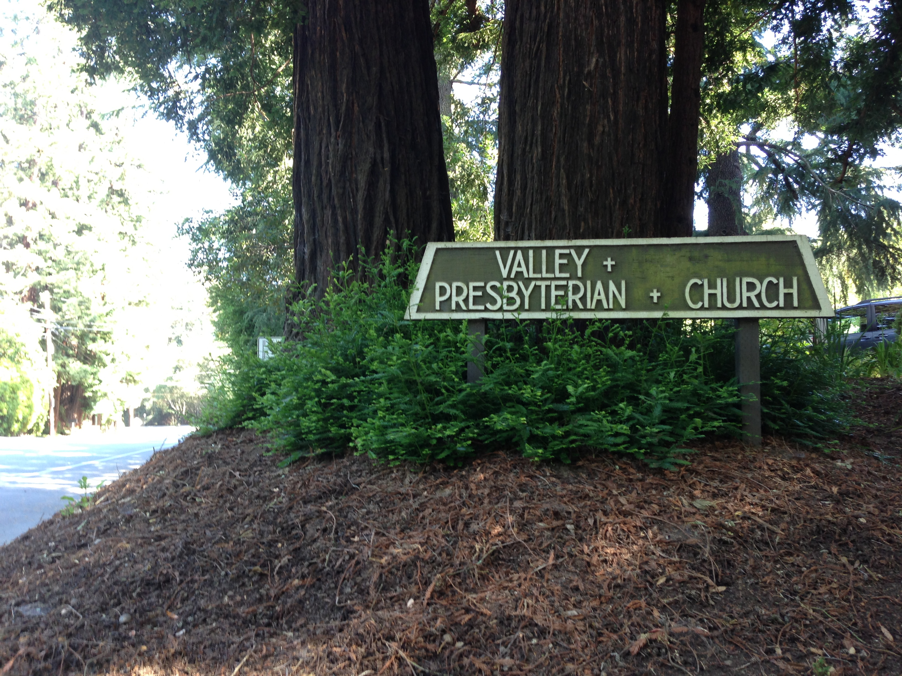

Welcome to Our Wedding!
Here you are! You can't help open the link in our invitation card, can you? ;-)
Welcome! We're so happy you are here and will join our wedding! Please allow us some words for the beginning.
Several months ago, we didn't plan to have a "wedding"; however, as things often happen, we end up with a wedding. A WEDDING!! That terrifies a lot of people (including Jianan). Preparing a wedding is an exhausted work (we can't count how many weekends we spent). But we also get something in the whole process: we laugh; we worry; we bite each other; we know people better and we also know ourselves better. Finally we decide to enjoy it because as we said in our invitation: where there is life, there is love.
So we hope you can also enjoy our wedding, our dear friends. It's a party to celebrate. Enjoy yourselves!
Couple.new({
:wife => 'Fang',
:husband => 'Jianan',
})
Anyone do a code review for me? ;-)
Ceremony
The ceremony will be hosted at Valley Presbyterian Church.
- 09:30am - 09:45am Please arrange to arrive around this time. Parkings are available outside the church.
- 09:45am - Guest seating starts
- 10:00am - Ceremony starts
- 10:30am - 11:00am Yay! We are officially married! Picture time!
- 11:00am - 12:00pm Let's go to Michaels at Shoreline Cafe. About 30 miniutes drive.
The church is not too hard to find. It's in a woods; so don't be afraid when you find you're surrounded by redwood trees :) This map might be helpful for you: map. When you see this sign, that is the church!

Reception
Time for food and party! Let's meet at Michaels At Shoreline in Mountain View.
Buffet style food will be served. Feel free to pick any seats and grab some food and drink before the bride and groom arrive. Stay as long as you like; enjoy yourselves.
Questionary
Finally, please do us a favor to fill out this form. It will ask your confirmation to come and how many people you're going to bring. We pay for the restaurant by head count; so we'd like to know an estimate number in advance. Thank you!